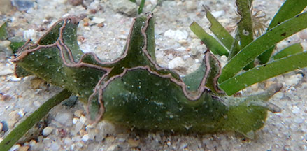
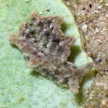
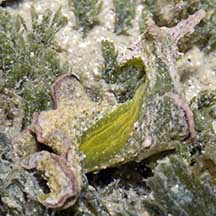
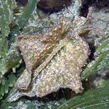
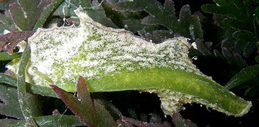

|
|
| sea slugs text index | photo index |
| Phylum Mollusca > Class Gastropoda > sea slugs > Order Sacoglossa > Elysia species |
| Woolly
leaf slugs Elysia sp. Family Plakobranchidae updated Jun 2020 Where seen? These tiny slugs appear woolly or fuzzy. They are sometimes seen on many of our shores, usually on green seaweeds. Sometimes, they occur in large numbers. Features: 1.5-2cm. Tiny slug with a pair of 'wings' (called parapodia) often held in ruffles. The body texture of tiny bumps gives it a fuzzy or woolly appearance. There is a pair of 'rolled up' tentacles: look like rolls of tissue with a hollow centre, not solid tentacles like other slugs. Generally pinkish with black spots. Some have a black border around the parapodia. Some are very fast moving. |
 Larger one seen among seagrasses. Cyrene Reef, Dec 16 |
 About 1cm long. Seen on Coin green seaweed Labrador, Jul 05 |
| It is difficult to tell apart the species in the field, but in general, Elysia tomentosa is generally dark green with a thin dark line along inner and outer margins of the parapodia. Between the two lines the parapodial margins were cream-coloured. Many black dots on the body, head and rhinophores. No dots on foot sole. Elysia cf. verrucosa is greyish green with many scattered small black spots. Also, many tiny orange or red dots. What do they eat? They have been seen on Bee hoon green seaweed (Chaetomorpha sp.), and are sometimes abundant on Hairy green seaweed (Bryopsis sp.). |
 Chek Jawa, Jul 05 |
 Green underside. Chek Jawa, Jul 05 |
 Chek Jawa, Jul 05 |
*Species are difficult to positively identify without close examination.
On this website, they are grouped by external features for convenience of display.
| Woolly leaf slugs on Singapore shores |
On wildsingapore
flickr
|
| Other sightings on Singapore shores |
 Underside. |
|
References
|